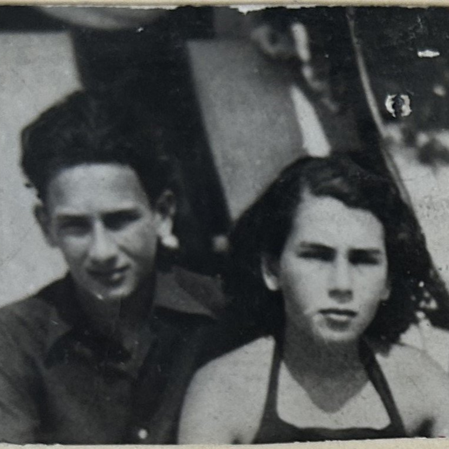

Portrait d’archive
Enfants Bloch
Jacques BLOCH
Jacques BLOCH est né le 17/08/1926 à Strasbourg en France.
Rassemblé à Annemasse, il est déporté à Auschwitz le 20/11/1943 par le convoi n°62. Il est mort en déportation.
Adresses connues :
Hôtel Richemont (Monte-Carlo)
Hôtel d'Angleterre - Perrache (Lyon)
École fréquentée : Lycée du Parc (Lyon) A partir du 29/03/1941.
Nom : BLOCH
Prénom(s) : Jacques
Date naissance : 17/08/1926
Âge (ans) : 17
Lieu naissance : Strasbourg
Pays ou département : Bas-Rhin
Lieu rassemblement : Annemasse
Dernière adresse : Hotel d'Angleterre, Perrache / Hôtel Richemont, Monte Carlo
Ville : Lyon
Code postal : 69001 69002
N° Convoi : 62
Date déportation : 20/11/1943
Informations diverses : Jacques Bloch est né le 17/08/1926 à Strasbourg. Il est le fils de David Bloch (07/05/1888, Strasbourg) marchand épicier et de Simone Bloch née Scheuer (02/06/1900, Châlons-en-Champagne) et le frère de Liliane. Il était scolarisé au Lycée du Parc, 6ème (entrée 29/3/1941). Menuisier. Refoulés à la frontière suisse, Perly-Certoux (Suisse) - Saint-Julien-en-Genevois, rassemblé à Annemasse, ils seront internés à la prison Montluc à Lyon. Jacques, Liliane et leurs parents seront déportés à Auschwitz par le convoi n°62 du 20/11/1943.
Frère de Liliane et de Claude (Bloch) Berthié (réseau Gallia). Réfugiés de Bordeaux à Lyon.
Bloch (Jacques, Edmond), né le 17 août 1926 à Strasbourg (Bas-Rhin), décédé le 25 novembre 1943 à Auschwitz (Pologne) et non le 25 novembre 1943 en déportation. JO
Bloch (Liliane, Hortense), née le 20 janvier 1929 à Strasbourg (Bas-Rhin), décédée le 25 novembre 1943 à Auschwitz (Pologne) et non le 25 novembre 1943 en déportation. Bloch (David), né le 7 mai 1888 à Strasbourg (Bas-Rhin), décédé le 25 novembre 1943 à Auschwitz. Bloch, née Scheuer (Simonne) le 2 juin 1900 à Reims (Marne), décédée le 25 novembre 1943 à Auschwitz (Pologne) et non le 25 novembre 1943 en déportation.
(Pologne) et non le 20 novembre 1943 en déportation.
Lieu de déportation : Auschwitz
Lieu de départ : Drancy
Nombre total de déporté·e·s du convoi : 1200
Gazé·e·s à l'arrivée : 914 (76,2 %)
Survivant·e·s en 1945 : 29 (2,4 %)
Liliane BLOCH
Liliane BLOCH est née le 20/01/1929 à Strasbourg en France.
Rassemblée à Annemasse, elle est déportée à Auschwitz le 20/11/1943 par le convoi n°62. Elle est morte en déportation.
Adresses connues :
Hôtel d'Angleterre - Perrache (Lyon)
Hôtel Richemont (Monte-Carlo)
École fréquentée : Lycée Edouard Herriot - Anciennement lycée Edgar Quinet (Lyon) Du 21/04/1921 au 31/03/1942 (“raison disciplinaire”).
Nom : BLOCH
Prénom(s) : Liliane, Hortense
Date naissance : 20/01/1929
Âge (ans) : 14
Lieu naissance : Strasbourg
Pays ou département : Bas-Rhin
Lieu rassemblement : Annemasse
Dernière adresse : Hotel d'Angleterre, Perrache / Hôtel Richemont, Monte Carlo
Ville : Lyon
Code postal : 69001 69002
N° Convoi : 62
Date déportation : 20/11/1943
Informations diverses : Liliane est la fille de David Bloch (07/05/1888) et de Simone Bloch née Scheuer (02/06/1900, Chalons). Elle était scolarisée au Lycée Edouard Herriot, 6ème (21/04/41-31/3/1942; raison "disciplinaire"; parents antiquaires. Refoulés à la frontière suisse, Perly-Certoux (Suisse) Saint-Julien-en-Genevois, ils sont arrêtés à Annemasse, ils seront internés à la prison Montluc à Lyon.
Soeur de Jacques et de Claude (Bloch) Berthié (réseau Gallia) 39 av. Gobelins 75013 Paris
Bloch (Liliane, Hortense), née le 20 janvier 1929 à Strasbourg (Bas-Rhin), décédée le 25 novembre 1943 à Auschwitz (Pologne) et non le 25 novembre 1943 en déportation. JO
Bloch (Jacques, Edmond), né le 17 août 1926 à Strasbourg (Bas-Rhin), décédé le 25 novembre 1943 à Auschwitz (Pologne) et non le 25 novembre 1943 en déportation. Bloch (David), né le 7 mai 1888 à Strasbourg (Bas-Rhin), décédé le 25 novembre 1943 à Auschwitz. Bloch, née Scheuer (Simonne) le 2 juin 1900 à Reims (Marne), décédée le 25 novembre 1943 à Auschwitz (Pologne) et non le 25 novembre 1943 en déportation.
Lieu de déportation : Auschwitz
Lieu de départ : Drancy
Nombre total de déporté·e·s du convoi : 1200
Gazé·e·s à l'arrivée : 914 (76,2 %)
Survivant·e·s en 1945 : 29 (2,4 %)